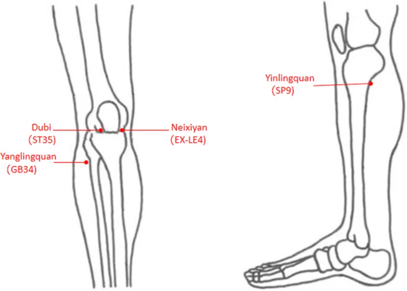

L'agopuntura antalgica consiste nell'inserire aghi molto sottili in punti definiti del corpo per ridurre il dolore. In ambito medico viene usata come trattamento di accompagnamento, non come alternativa alle cure.
Il beneficio esiste ed è stato misurato, ma è di entità contenuta. Dove funziona meglio, e dove invece no, è scritto qui sotto.

Dove funziona meglio
Mal di testa
È l'indicazione con le prove più solide, sia per la prevenzione della cefalea di tipo tensivo sia per quella dell'emicrania episodica.[2] Alcune raccomandazioni nazionali prevedono un ciclo definito di sedute, non un trattamento a tempo indeterminato.
Artrosi del ginocchio
Molte sintesi riportano un sollievo nel breve periodo nell'artrosi del ginocchio, anche se la qualità degli studi è spesso modesta.[2] Per l'anca i dati sono più deboli.
Dolore muscolo-scheletrico cronico
Raccogliendo i dati dei singoli pazienti di numerosi studi, l'agopuntura è risultata superiore sia all'agopuntura finta sia all'assenza di trattamento nel dolore muscolo-scheletrico, nell'artrosi, nella cefalea cronica e nel dolore di spalla.[1]
Il punto che vale la pena capire è proprio questo doppio confronto. La differenza rispetto al non fare nulla è netta; quella rispetto all'agopuntura finta — aghi messi altrove o appena appoggiati — è reale ma piccola. Significa che una parte dell'effetto dipende dagli aghi e dove si mettono, e una parte dal contesto: l'attenzione ricevuta, il tempo dedicato, l'aspettativa. Nessuna delle due è irrilevante per chi sta male, ma è onesto sapere come stanno le cose.
Dove le prove non sostengono l'uso
Nel mal di schiena i risultati sono contrastanti, e alcune linee guida nazionali hanno smesso di raccomandarla.[2]
Nella fibromialgia e in diverse altre condizioni dolorose le prove restano inconcludenti.[2]
Com'è la seduta
Si sta sdraiati o seduti. Gli aghi, molto più sottili di quelli da iniezione, vengono inseriti in alcuni punti e lasciati in sede per un tempo variabile, in genere una ventina di minuti. In alcuni casi vengono ruotati o collegati a un piccolo stimolatore elettrico.
L'inserimento si sente poco; è frequente una sensazione sorda di peso o di formicolio attorno all'ago. Il trattamento si svolge per cicli di alcune sedute, in genere settimanali.
Dopo la seduta, fai
- Alzati lentamente: il calo di pressione dopo la seduta è comune.
- Metti in conto una sensazione di stanchezza o di rilassamento per qualche ora.
- Prosegui gli altri trattamenti in corso: l'agopuntura si affianca, non sostituisce.
- Concorda in anticipo quante sedute prevede il ciclo e quando si valuta il risultato.
Non fare
- Non sospendere farmaci prescritti perché hai iniziato l'agopuntura.
- Non proseguire a oltranza se dopo il ciclo concordato non è cambiato nulla.
- Non rivolgerti a chi non è un professionista sanitario abilitato: in Italia è un atto medico.
Quando non si fa
- Segni di allarme che richiedono prima un accertamento diagnostico.
- Infezione grave in corso.
- Impossibilità di dare un consenso consapevole o di collaborare durante la seduta.
- Vera fobia degli aghi.
- Localmente: pelle infetta, zona di un tumore, tratti di colonna instabili.[4]
Richiedono precauzioni particolari la terapia anticoagulante, la gravidanza, il portatore di pacemaker quando si usa la stimolazione elettrica, e le zone sopra il torace, dove la profondità dell'ago va controllata.[4]
Effetti indesiderati
Gli effetti comuni sono lievi: dolore nel punto di inserimento, piccoli lividi, qualche goccia di sangue, sensazione di testa leggera, stanchezza. In una rilevazione condotta su decine di migliaia di sedute, gli eventi avversi sono risultati poco frequenti e quasi sempre di scarsa entità.[3]
Le complicanze serie sono rare e legate alla tecnica più che al metodo: la più temuta è lo pneumotorace da ago troppo profondo nella regione del torace. Le infezioni sono praticamente scomparse con l'uso di aghi monouso.
Se dopo una seduta compaiono dolore al torace o difficoltà a respirare, è una situazione da pronto soccorso.
Cosa è utile sapere prima
Le spiegazioni tradizionali non sono state confermate. I concetti di energia che scorre lungo canali non hanno riscontro scientifico. Esistono invece ipotesi moderne sul come funzioni — stimolazione di fibre nervose, attivazione delle vie che inibiscono il dolore, rilascio di oppioidi prodotti dall'organismo — che spiegano una parte dei risultati senza ricorrere a quei concetti.[2]
In Italia è un atto medico. Può essere praticata da un medico, o da altri professionisti sanitari nei limiti della propria competenza, e richiede una formazione specifica.
Serve un punto di arrivo. Il ciclo va definito all'inizio, con un numero di sedute e un momento in cui si verifica se ha funzionato. Un trattamento che prosegue indefinitamente senza verifiche non è un buon trattamento, qualunque sia la tecnica.
Da dove vengono queste informazioni
- Vickers AJ, Vertosick EA, Lewith G, et al. Acupuncture for chronic pain: update of an individual patient data meta-analysis. The Journal of Pain 2018;19(5):455–474. doi:10.1016/j.jpain.2017.11.005
- Paley CA, Johnson MI. Acupuncture for the relief of chronic pain: a synthesis of systematic reviews. Medicina 2020;56(1):6. doi:10.3390/medicina56010006
- Won J, Lee JH, Bang H, et al. Safety of acupuncture by Korean Medicine Doctors: a prospective, practice-based survey of 37,490 consultations. BMC Complementary Medicine and Therapies 2022;22:300. doi:10.1186/s12906-022-03782-z
- Acupuncture Association of Chartered Physiotherapists. Safe practice guidelines for acupuncture physiotherapists. AACP, Peterborough, 2021.
Scheda aggiornata il 16 novembre 2026. Prossima revisione prevista entro novembre 2028.
Per quali disturbi
Le schede dei disturbi per cui questo trattamento viene preso in considerazione, con quello che dicono le linee guida.
Cerca un'altra scheda
Un disturbo, un trattamento, o anche solo il punto che fa male: «formicolio», «tallone», «spalla congelata».